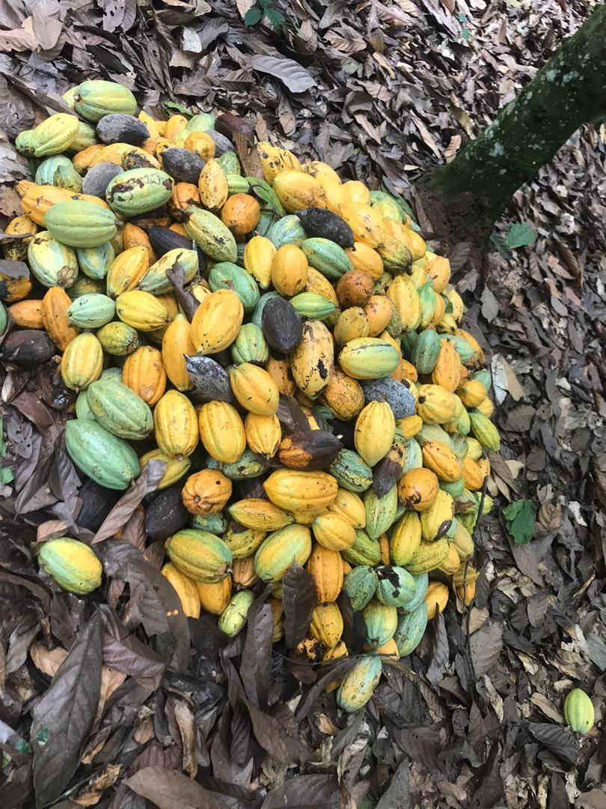
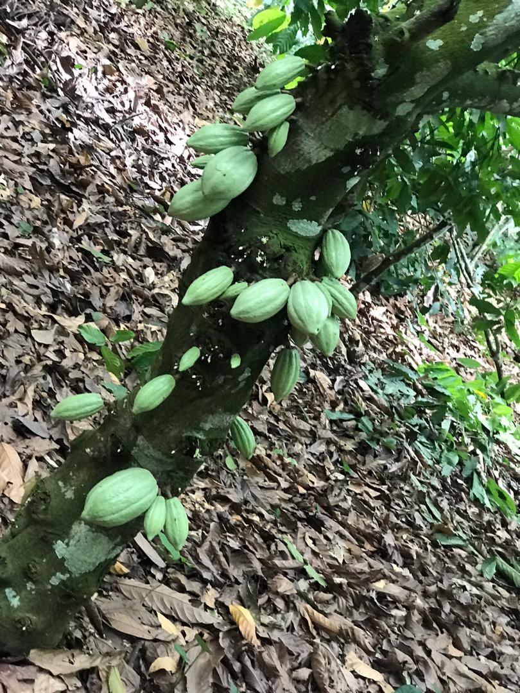

02 / A closer look at the science
Enjoy the flavor. Understand the evidence.
Cocoa contains interesting plant compounds, but a chocolate treat and a proven health benefit are different things.
What cocoa can offer
Flavanols and nutrients

Cocoa contains flavanols, plant compounds studied for their effects on blood vessels. Harvard’s Nutrition Source explains that these compounds can support nitric oxide production, which helps blood vessels relax and supports blood flow.
Dark chocolate also supplies minerals, including iron, copper, and magnesium. It generally contains more flavanol-rich cocoa solids than milk chocolate, though processing affects the final amount.
More cocoa does not automatically mean more benefit. Chocolate can also contribute substantial calories, sugar, and saturated fat. The overall food and portion matter, alongside its cocoa content.
Keep health claims in perspective
What the FDA actually evaluated

The FDA found only very limited scientific support for a cardiovascular-risk claim concerning high-flavanol cocoa powder. That qualified claim does not extend to ordinary cocoa powder or chocolate bars.
This is a reason to distinguish a researched ingredient from the products that contain it. Chocolate can be enjoyed for its flavor; the evidence does not justify treating a bar as medicine.
For more context, read the source pages below and explore the role of processing in cocoa.